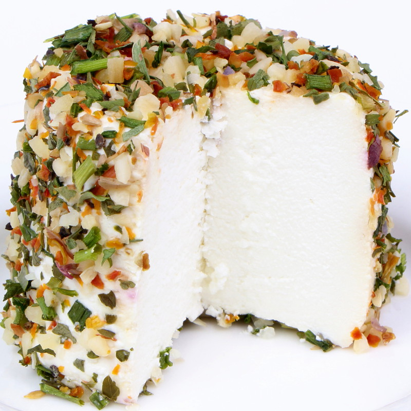
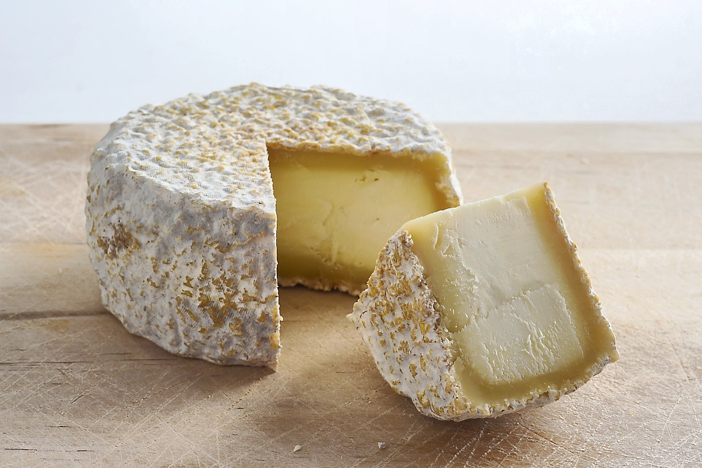
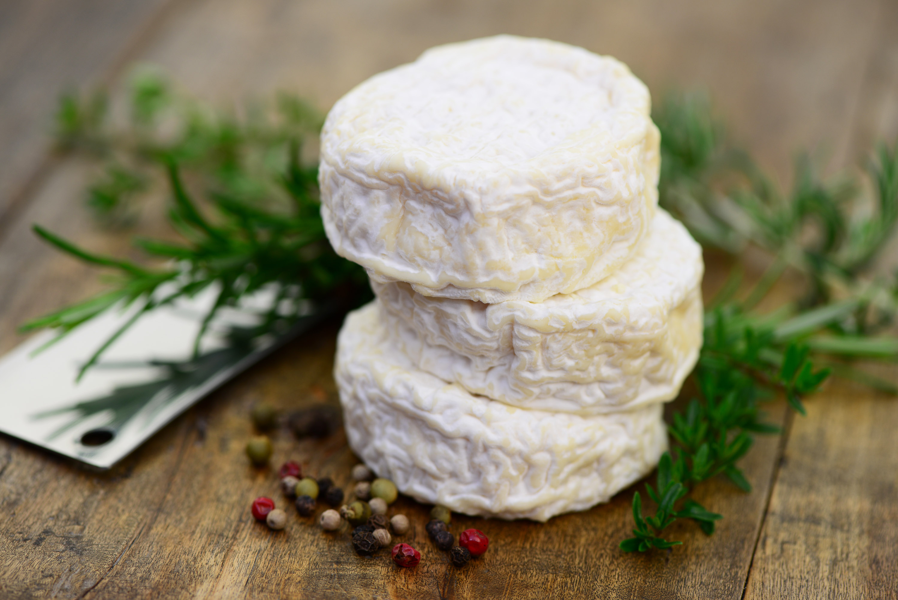
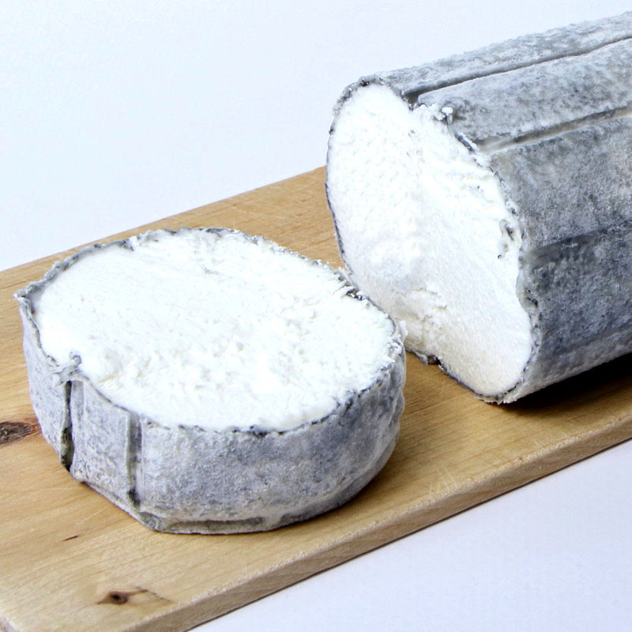
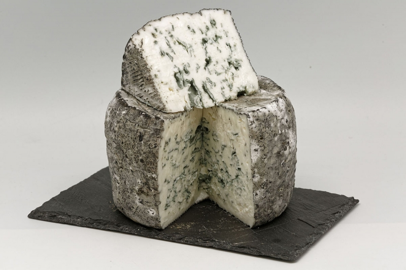
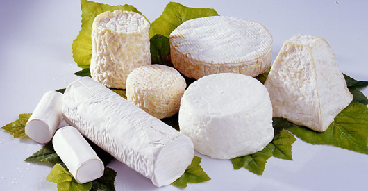

Un assortiment de fromages de diverses textures et saveurs, soigneusement sélectionnés pour offrir une expérience gustative variée et satisfaisante.
20€ TTC Noté 5/10 Un fromage à pâte pressée non cuite, fabriqué à partir de lait de brebis. Il offre une saveur riche et légèrement fruitée, avec une texture lisse et crémeuse.
30€ TTC Noté 3/10 Un fromage de chèvre à pâte molle et à croûte naturelle, originaire de la région de Rocamadour en France. Il a une texture crémeuse et une saveur subtilement acidulée avec des notes de noisette.
25€ TTC Noté 6/10 Un fromage de chèvre à pâte molle et à croûte cendrée, souvent en forme de bûche. Il a une texture veloutée et un goût légèrement salé, avec des nuances terreuses et de fumée.
30€ TTC Noté 10/10 Un fromage bleu à base de lait de chèvre, caractérisé par ses veines bleu-vert. Il a une texture crémeuse et fondante avec une saveur robuste et piquante.
15€ TTC Noté 7/10 Un fromage de chèvre frais, jeune et tendre, souvent aromatisé avec des herbes fraîches ou des fleurs comestibles. Il a une texture onctueuse et une saveur délicate et légèrement acidulée.
4€ TTC Noté 9/10 